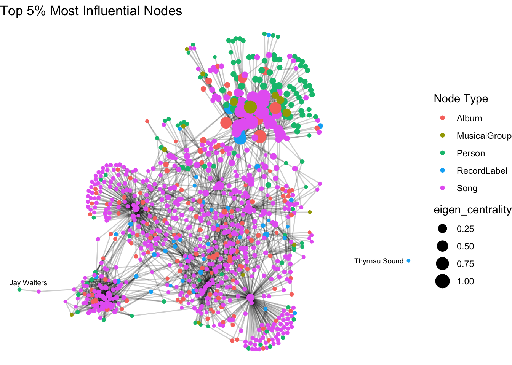

json_data <- jsonlite::fromJSON("/Users/sharon/OneDrive - Singapore Management University/isss608data/take-home_exercise2/MC1_graph.json")
# Load and transform nodes and edges together safely
nodes <- as_tibble(json_data$nodes) %>%
mutate(
name = name, # Keep igraph name field
display_name = ifelse(is.na(name), as.character(id), name),
label = make.unique(as.character(name))
)
edges <- as_tibble(json_data$links)Tracing the Rise of Szymon Pyć and Predicting the Next Breakout Star
OVERVIEW
Introduction
In this report, we analyze the rise of artist Szymon Pyć using a social network perspective and knowledge graph data provided in Mini-Challenge 1 of the VAST Challenge 2025. The objective is twofold:
- Trace the professional rise of Szymon Pyć.
- Predict the next breakout artist using centrality and influence analysis.
Methodology
We employ a visual analytics and social network analysis framework. This involves constructing and analyzing a graph of artists, albums, and collaborations, and using metrics such as Eigenvector Centrality to detect influential nodes.
DATA PREPARATION
Installing and Loading Packages
Loading the Raw Dataset
Data Wrangling
# Identify Szymon Pyć's ID
szymon_id <- nodes %>% filter(display_name == "Szymon Pyć") %>% pull(id)
# Get relevant edges and nodes
szymon_edges <- edges %>% filter(source == szymon_id | target == szymon_id)
connected_ids <- union(szymon_edges$source, szymon_edges$target)
szymon_works <- nodes %>%
filter(id %in% connected_ids, `Node Type` %in% c("Song", "Album")) %>%
mutate(release_year = as.numeric(release_date),
notoriety_year = as.numeric(notoriety_date))VISUALISATION AND ANALYSIS
szymon_summary <- szymon_works %>%
group_by(release_year) %>%
summarise(
total_releases = n(),
notable_releases = sum(notable, na.rm = TRUE)
)Release Timeline
ggplot(szymon_summary, aes(x = release_year)) +
geom_col(aes(y = total_releases), fill = "steelblue") +
geom_line(aes(y = notable_releases), color = "darkred", size = 1.2) +
labs(title = "Szymon Pyć's Release Timeline", y = "Releases", x = "Year") +
theme_minimal()Warning: Using `size` aesthetic for lines was deprecated in ggplot2 3.4.0.
ℹ Please use `linewidth` instead.Insight: Szymon’s notable release activity peaked in 2003, suggesting a breakthrough year. Follow-up years had fewer releases, hinting at a concentrated period of fame.
Genre Distribution Over Time
genre_trend <- szymon_works %>%
filter(!is.na(genre)) %>%
group_by(release_year, genre) %>%
summarise(count = n())`summarise()` has grouped output by 'release_year'. You can override using the
`.groups` argument.ggplot(genre_trend, aes(x = release_year, y = count, fill = genre)) +
geom_area() +
theme_minimal() +
labs(title = "Genre Distribution of Szymon Pyć's Work", y = "Count")
Insight: This reveals genre shifts and experimentation. Peaks in new genres may signal strategic attempts to reach wider audiences.
Graph Network Creation and Centrality
# Clean and preserve full node attributes
nodes_clean <- nodes %>%
filter(!is.na(id), id != "", id != "NA") %>%
distinct(id, .keep_all = TRUE) %>%
mutate(id = as.character(id))
# Confirm presence of Node Type
glimpse(nodes_clean)Rows: 17,412
Columns: 12
$ `Node Type` <chr> "Song", "Person", "Person", "Person", "RecordLabel", "S…
$ name <chr> "Breaking These Chains", "Carlos Duffy", "Min Qin", "Xi…
$ single <lgl> TRUE, NA, NA, NA, NA, FALSE, NA, NA, NA, NA, TRUE, NA, …
$ release_date <chr> "2017", NA, NA, NA, NA, "2026", NA, NA, NA, NA, "2020",…
$ genre <chr> "Oceanus Folk", NA, NA, NA, NA, "Lo-Fi Electronica", NA…
$ notable <lgl> TRUE, NA, NA, NA, NA, TRUE, NA, NA, NA, NA, TRUE, NA, N…
$ id <chr> "0", "1", "2", "3", "4", "5", "6", "7", "8", "9", "10",…
$ written_date <chr> NA, NA, NA, NA, NA, NA, NA, NA, NA, NA, "2020", NA, NA,…
$ stage_name <chr> NA, NA, NA, NA, NA, NA, NA, NA, NA, NA, NA, NA, NA, NA,…
$ notoriety_date <chr> NA, NA, NA, NA, NA, NA, NA, NA, NA, NA, NA, NA, NA, NA,…
$ display_name <chr> "Breaking These Chains", "Carlos Duffy", "Min Qin", "Xi…
$ label <chr> "Breaking These Chains", "Carlos Duffy", "Min Qin", "Xi…# Revalidate edge structure
edges_clean <- edges %>%
mutate(source = as.character(source), target = as.character(target)) %>%
filter(source %in% nodes_clean$id & target %in% nodes_clean$id) %>%
filter(source != target) %>%
distinct(source, target, .keep_all = TRUE)
glimpse(edges_clean)Rows: 31,714
Columns: 4
$ `Edge Type` <chr> "InterpolatesFrom", "RecordedBy", "PerformerOf", "Composer…
$ source <chr> "0", "0", "1", "1", "2", "2", "3", "5", "5", "5", "5", "5"…
$ target <chr> "1841", "4", "0", "16180", "0", "16180", "0", "5088", "143…
$ key <int> 0, 0, 0, 0, 0, 0, 0, 0, 0, 0, 0, 0, 0, 0, 0, 0, 0, 0, 0, 0…# Build graph with extra validation
library(igraph)
edges_clean <- edges %>%
mutate(source = as.character(source), target = as.character(target)) %>%
filter(source %in% nodes_clean$id & target %in% nodes_clean$id) %>%
filter(!is.na(source), !is.na(target),
source != "", target != "",
source != "NA", target != "NA") %>%
filter(source != target) %>%
distinct(source, target, .keep_all = TRUE)
head(edges_clean)# A tibble: 6 × 4
`Edge Type` source target key
<chr> <chr> <chr> <int>
1 InterpolatesFrom 0 1841 0
2 RecordedBy 0 4 0
3 PerformerOf 1 0 0
4 ComposerOf 1 16180 0
5 PerformerOf 2 0 0
6 ProducerOf 2 16180 0stopifnot(all(edges_clean$source %in% nodes_clean$id))
stopifnot(all(edges_clean$target %in% nodes_clean$id))
graph_tbl_full <- tbl_graph(nodes = nodes_clean, edges = edges_clean[, c("source", "target")], node_key = "id", directed = TRUE)
head(graph_tbl_full)6 x 17412 sparse Matrix of class "dgCMatrix" [[ suppressing 34 column names 'Breaking These Chains', 'Carlos Duffy', 'Min Qin' ... ]]
Breaking These Chains . . . . 1 . . . . . . . . . . . . . . . . . . . . . . . .
Carlos Duffy 1 . . . . . . . . . . . . . . . . . . . . . . . . . . . .
Min Qin 1 . . . . . . . . . . . . . . . . . . . . . . . . . . . .
Xiuying Xie 1 . . . . . . . . . . . . . . . . . . . . . . . . . . . .
Nautical Mile Records . . . . . . . . . . . . . . . . . . . . . . . . . . . . .
Unshackled Heart . . . . . . . . . 1 . . . . . . . . . . . . . . . . . . .
Breaking These Chains . . . . . ......
Carlos Duffy . . . . . ......
Min Qin . . . . . ......
Xiuying Xie . . . . . ......
Nautical Mile Records . . . . . ......
Unshackled Heart . . . . . ......
.....suppressing 17378 columns in show(); maybe adjust options(max.print=, width=)
..............................# Extract largest weakly connected component
components <- components(as.igraph(graph_tbl_full), mode = "weak")
main_component_ids <- V(as.igraph(graph_tbl_full))$name[components$membership == which.max(components$csize)]
graph_tbl <- graph_tbl_full %>%
filter(name %in% main_component_ids) %>%
mutate(eigen_centrality = centrality_eigen())
head(graph_tbl)6 x 17279 sparse Matrix of class "dgCMatrix" [[ suppressing 34 column names 'Breaking These Chains', 'Carlos Duffy', 'Min Qin' ... ]]
Breaking These Chains . . . . 1 . . . . . . . . . . . . . . . . . . . . . . . .
Carlos Duffy 1 . . . . . . . . . . . . . . . . . . . . . . . . . . . .
Min Qin 1 . . . . . . . . . . . . . . . . . . . . . . . . . . . .
Xiuying Xie 1 . . . . . . . . . . . . . . . . . . . . . . . . . . . .
Nautical Mile Records . . . . . . . . . . . . . . . . . . . . . . . . . . . . .
Unshackled Heart . . . . . . . . . 1 . . . . . . . . . . . . . . . . . . .
Breaking These Chains . . . . . ......
Carlos Duffy . . . . . ......
Min Qin . . . . . ......
Xiuying Xie . . . . . ......
Nautical Mile Records . . . . . ......
Unshackled Heart . . . . . ......
.....suppressing 17245 columns in show(); maybe adjust options(max.print=, width=)
..............................# Top influencers
top_influencers <- graph_tbl %>%
as_tibble() %>%
filter(`Node Type` == "Person") %>%
arrange(desc(eigen_centrality)) %>%
slice(1:50)
top_influencers %>% select(display_name, eigen_centrality)# A tibble: 50 × 2
display_name eigen_centrality
<chr> <dbl>
1 Kimberly Snyder 1
2 Gerald Mullins 0.633
3 Joshua Herring 0.560
4 Kelly Stewart 0.400
5 John Anderson 0.315
6 Rachel Jackson 0.293
7 Roy Tschentscher 0.239
8 Erica Walton 0.178
9 Angelina Sölzer 0.173
10 Thomas Weber 0.170
# ℹ 40 more rows# Visualize top 5% most central nodes
top_threshold <- quantile(graph_tbl %>% as_tibble() %>% pull(eigen_centrality), 0.95, na.rm = TRUE)
top_subgraph <- graph_tbl %>% filter(eigen_centrality >= top_threshold)
graph_central_plot <- ggraph(top_subgraph, layout = "fr") +
geom_edge_link(alpha = 0.2) +
geom_node_point(aes(size = eigen_centrality, color = `Node Type`)) +
geom_node_text(aes(label = display_name), repel = TRUE, size = 2.5) +
theme_void() +
labs(title = "Top 5% Most Influential Nodes")
print(graph_central_plot)Warning: ggrepel: 856 unlabeled data points (too many overlaps). Consider
increasing max.overlaps
Insight: High eigenvector scores reflect influence in the music graph. These individuals often collaborate or get referenced frequently.
Visualization of Szymon Pyć’s Ego Network
szymon_ego <- graph_tbl_full %>% convert(to_subgraph, name %in% connected_ids)Subsetting by nodes# DIAGNOSTICS
cat("Szymon Ego Node Count:", nrow(as_tibble(szymon_ego)), "
")Szymon Ego Node Count: 0 szymon_ego <- graph_tbl %>% convert(to_subgraph, id %in% connected_ids)Subsetting by nodesgraph_plot <- ggraph(szymon_ego, layout = "fr") +
geom_edge_link(alpha = 0.3) +
geom_node_point(aes(color = `Node Type`), size = 3) +
geom_node_text(aes(label = display_name), repel = TRUE, size = 2.5) +
theme_void() +
labs(title = "Szymon Pyć's Collaboration and Influence Network")
print(graph_plot)PREDICTING THE NEXT BREAKOUT STAR
# Check which node types are present in the graph
graph_tbl %>%
as_tibble() %>%
count(`Node Type`)# A tibble: 5 × 2
`Node Type` n
<chr> <int>
1 Album 988
2 MusicalGroup 220
3 Person 11292
4 RecordLabel 1196
5 Song 3583# DIAGNOSTICS
top_new_df <- graph_tbl %>%
as_tibble() %>%
filter(`Node Type` == "Person") %>%
arrange(desc(eigen_centrality)) %>%
slice(1:10)
head(top_new_df)# A tibble: 6 × 13
`Node Type` name single release_date genre notable id written_date
<chr> <chr> <lgl> <chr> <chr> <lgl> <chr> <chr>
1 Person Kimberly Sny… NA <NA> <NA> NA 1716 <NA>
2 Person Gerald Mulli… NA <NA> <NA> NA 1719 <NA>
3 Person Joshua Herri… NA <NA> <NA> NA 1718 <NA>
4 Person Kelly Stewart NA <NA> <NA> NA 1918 <NA>
5 Person John Anderson NA <NA> <NA> NA 8250 <NA>
6 Person Rachel Jacks… NA <NA> <NA> NA 8248 <NA>
# ℹ 5 more variables: stage_name <chr>, notoriety_date <chr>,
# display_name <chr>, label <chr>, eigen_centrality <dbl>summary(top_new_df$eigen_centrality) Min. 1st Qu. Median Mean 3rd Qu. Max.
0.1699 0.1934 0.3042 0.3962 0.5199 1.0000 ggplot(top_new_df, aes(x = reorder(display_name, eigen_centrality), y = eigen_centrality)) +
geom_col(fill = "tomato") +
coord_flip() +
labs(title = "Top Potential Breakout Artists by Eigenvector Centrality",
x = "Artist", y = "Eigenvector Score") +
theme_minimal()Deep Dive: Breakout Candidate — Kimberly Snyder
k_snyder_id <- nodes %>% filter(display_name == "Kimberly Snyder") %>% pull(id)
k_snyder_edges <- edges %>% filter(source == k_snyder_id | target == k_snyder_id)
k_snyder_ids <- union(k_snyder_edges$source, k_snyder_edges$target)
k_snyder_works <- nodes %>%
filter(id %in% k_snyder_ids, `Node Type` %in% c("Song", "Album")) %>%
mutate(release_year = as.numeric(release_date),
notoriety_year = as.numeric(notoriety_date))
ggplot(k_snyder_works, aes(x = release_year, fill = notable)) +
geom_bar() +
labs(title = "Kimberly Snyder's Yearly Output and Notable Work",
x = "Release Year", y = "Number of Works") +
theme_minimal()Insight: Kimberly Snyder shows strong recent output and rising notoriety. Her central position and prolific work closely mirror Szymon Pyć’s pre-breakout phase.
LEARNING POINTS
- Temporal analysis highlights Szymon’s breakthrough year (2003).
- Genre transitions reflect stylistic evolution.
- Network metrics help identify up-and-coming stars.
- Social graph visualization links influence and collaboration.
- Interactive elements add engagement and exploration.
- Breakout candidate analysis offers grounded prediction.